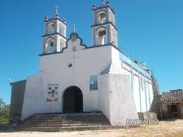
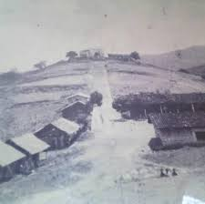
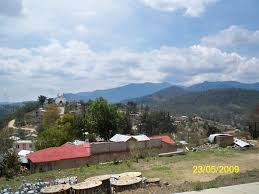

|
| historia curiosidades ubicacion contacto carrusel |   | La comunidad de Santa María Cuquila, Tlaxiaco, Oaxaca. Está ubicada al suroeste de la Capital del estado, a una altitud de 1225 metros y la distancia por la carretera No,125 es de 220 km ., enclavada en la región Mixteca, con una población aproximada de 13.500 habitantes, contando con sus rancherías y parajes. Es una Presidencia Municipal de usos y costumbresPerteneciente a Santa María Asunción Tlaxiaco, Oaxaca., pera llegar a esta comunidad saliendo de la capital del Estado, la ruta a seguir y mas corta es por la supercarretera, con salida a Nochixtlan, rumbo a Huajuapan de León, hasta encontrar un entronque con rumbos diferentes a Huajuapan/México y Tlaxiaco/Pinotepa, pasando por Teposcolula y Yolomecatl se encuentra la ciudad de Tlaxiaco, que es cabecera de Distrito, a 20 km . sobre la carretera Putla – Pinotepa, se encuentra ubicada Santa María Cuquila, comunidad netamente indígena, con el dominio de la lengua Mixteca y un rezago económico, social y cultural. Santa María Cuquila tiene el privilegio de contar con una zona arqueológica llamada “Ñuu Kuiñi” o Pueblo del Tigre, también se le conoce con el nombre de ” la Cacica “, es un centro cívico ceremonial-residencial que floreció en el clásico temprano ( 300 a.c. – 300 d.c.) fue parcialmente ocupado hasta su abandono, una característica que sobresale del sitio arqueológico Ñuu Kuiñi, es su extraordinario juego de pelota, cuyas dimensiones los hacen notar como el centro rector de la acrópolis, cuyo dominio sobre el entorno físico unifica la pequeña ciudad que albergaba a 2000 códices mixteco “Ñuu Kuiñi”, la formación geológica de las paredes del cerro es cóncava y se asemeja a un embudo en mitades, lo que les facilitaba el dominio de la observación a distancia. En la comunidad existe un santuario que venera a la Virgen de Juquila cuya fiesta es el 8 de diciembre, la influencia de fieles proviene de muchas comunidades vecinas y otras lejanas, además de visitar y conocer las ruinas arqueológicas como un punto destacado de nuestros antepasados en la Mixteca Oaxaqueña. |
 |